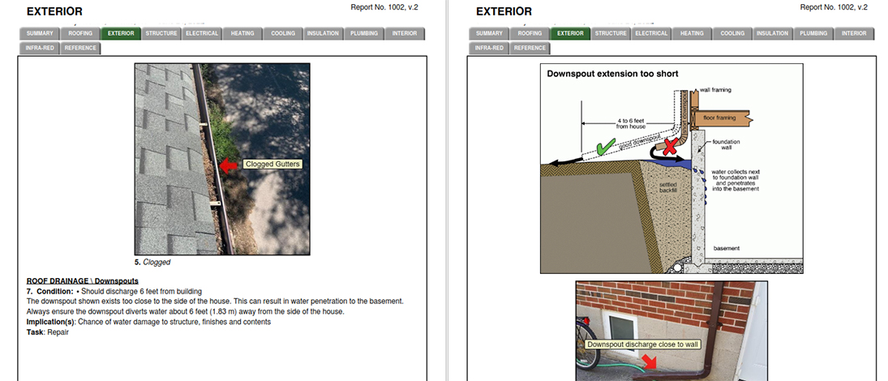
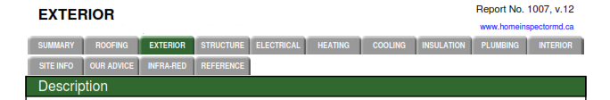
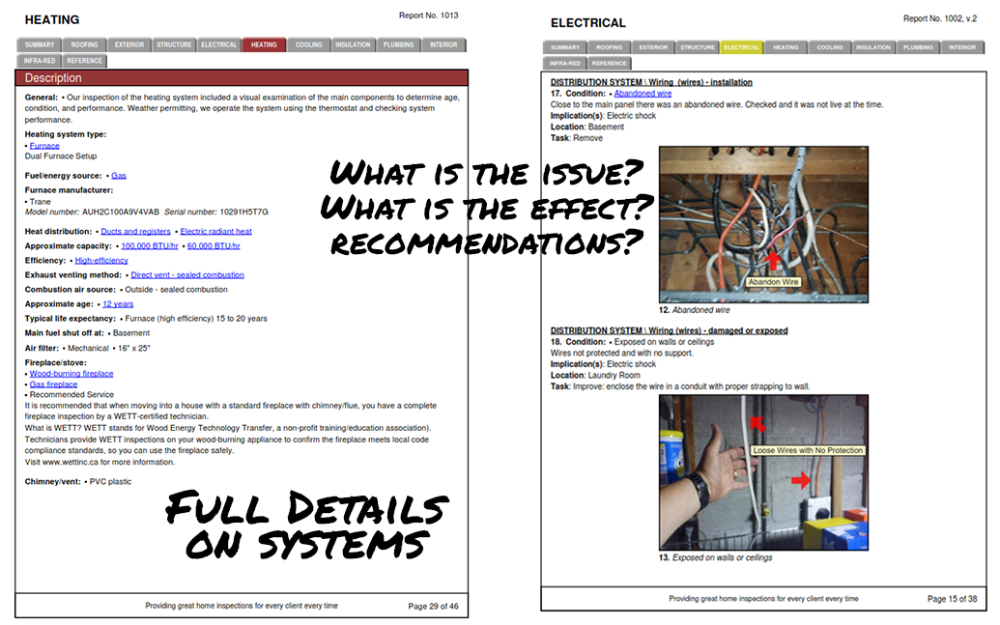
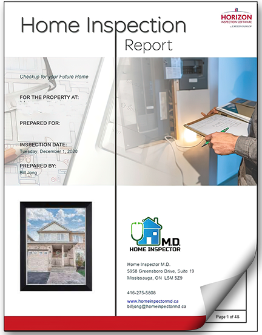
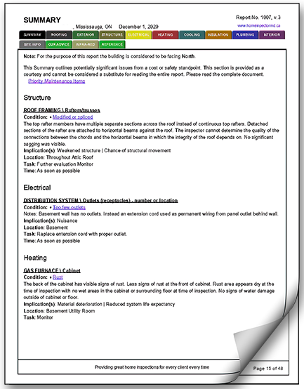

-


A Premium Report Designed to Reduce Stress, Not Create It
Most home inspection reports are dense, overwhelming PDFs packed with confusing contractor jargon. They leave you feeling more anxious than before you started. We do things differently. Our modern digital reports are engineered specifically to give you instant clarity and peace of mind under tight conditional deadlines:
- The "De-Stress" Summary: We separate minor, typical maintenance items from actual high-priority structural or safety concerns. You can see the big picture in 30 seconds.
- High-Definition Photo Timelines: Every single issue found is paired with a crisp, clear photo and an arrow showing you exactly what it is. No guesswork required.
- Clear Next Steps: We don't just tell you what's broken; we explain exactly why it matters and what needs to be done next, giving you massive leverage during price negotiations.
- Same-Day Evening Delivery: Rushing against a tight timeline? Your complete digital report is delivered straight to your phone and inbox the very same evening.
 Fast Delivery
Fast DeliveryWe provide same-day delivery of your report after the in-home inspection is completed. Note: Special late afternoon inspections will result in reports available the next morning.

High-Quality Photos with Illustrations
So many home inspection reports have photos, but when you want to look at them closely in the PDF report and zoom in, it's a blurry mess. Our photos in the reports will only have high-resolution photos, so you can zoom in and get a better look. Want an even closer look? We store all the original photos, just request the photo you want.
When it comes to making a point, a good illustration makes a world of difference. We include useful illustrations when needed to clearly show you issues and solutions. All photos will POINT/HIGHLIGHT the issue. Many other reports just show you a photo and not SHOW you where the issue is.
Videos: A video is worth a thousand photos
If we find an issue that warrants a video to provide a better and broader context, such as a drone flyby of the roof, we will provide you with private YouTube links available in the report.

Super Easy Navigation
Sometimes reports can be 30, 40 or even 60+ pages long. You can easily get lost in these reports. You just can't get lost in our (Horizon) colour-coded tab reports. Tabs of each system are always present at the top of each page, so you are never lost. Click on the system you want, and go directly to it. The system is always highlighted, so you know where you are at all times.

Clean, Clear Reports Structure
SUMMARY:
For quick reference, the beginning of the report will have a summary of the more significant conditions found during the inspection.SYSTEMS:
Each system section will begin with a detailed DESCRIPTION. This will provide specifications on some of your components, such as the water heater, furnace, and electrical panel. This is useful for future renovations or upgrades.
The heart of your home inspection report is the OBSERVATIONS. Here, we will report on each issue we find with possible recommendations. Each condition will have a photo with captions pointing directly to the issue. Some conditions will also have illustrations to provide additional information.
- Condition: Description of the issue found. These can be safety issues, missing parts, a system installed incorrectly, a defect in the system, or damage.
- Implication(s): What impact on the house does the condition have? Could it lead to water leakage, a fire hazard, a safety issue, or a structural problem?
- Recommendation/Task: Provide recommendations on what can be done to solve the condition found.
OUR ADVICE:
The report will also provide you with home maintenance and safety tips. Just like you must take care of your health and body, you must also take care of your home. Good preventative maintenance is an effective way to protect your investment and help make systems last longer. Our home inspection reports include a section near the end called OUR ADVICE, ideas to help make sure that your home continues to be safe, comfortable, and efficient.
INFRARED:
At the end of the report is our section called INFRARED. This section shows the results of our IR thermal inspection of the house.
-
Download a Real Report
See the Clarity YourselfYour home inspection report shouldn't read like a complex engineering manual. It should give you immediate answers. See how we clearly separate simple maintenance tips from major structural priorities. Click below to download a genuine sample report and see how simple your home checkout can be.


-
Report FAQ
-
A home inspection is a visual inspection only. A home inspector may see something that could be an issue, but since they do not open walls, open systems, provide on-site testing, or take comprehensive measurement readings, they cannot confirm the issue, and it may require a specialist in the field to evaluate the condition. This is similar to when you visit your family doctor, and they refer you to a medical specialist in the field in question.
- Personal cover letter.
- Agreement contract.
- Summary: conditions found that are considered priorities.
- Systems: Roofing/Exterior/Structure/Electrical/Heating/Cooling/Insulation/Plumbing/Interior
- Site information: General information about the location and house details.
- Our Advice: Some general advice on good maintenance ideas for homeowners.
- Infra-Red: Results of our IR thermal inspection of the interior of the house.
- Reference: This is the linked online version of the 460-page Carson Dunlop Reference Book for new homeowners.
Absolutely. Just contact us, and we will send you another PDF copy. We will always keep your report on hand for years.
Even if a system or component was functional at the time of the inspection, we would sometimes point them out because we would consider it “not best practice”. What does that mean? It means there might be a better way the system/component could have been installed, leading to fewer problems in the future.
Limitations in the report are when the inspector was unable to inspect a system or component because of unforeseen circumstances. For example, boxes or furniture covering a floor or wall is considered a limitation. No access to the attic is a limitation. Being unable to walk on the roof because it is too steep is a limitation.
Generally no. Not all issues in a report are major problems that need to be dealt with immediately. Many will be minor or optional, or recommended because they were not best practices. Do not be alarmed. The summary pages at the beginning of the report will list the most important concerns.
You will receive your report within 24 hours or sooner from completion of the inspection on site. You will be provided with a notification and a link to download the report in PDF format.
-
Ready for your first inspection?
Book CoachingCall us today at 416-275-5808 or book your inspection online.